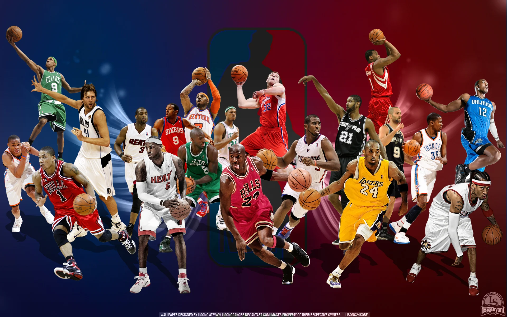
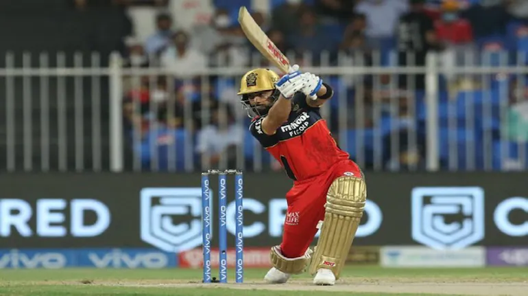

I’ve missed more than 9,000 shots in my career. I’ve lost almost 300 games. Twenty-six times, I’ve been trusted to take the game-winning shot and missed. I’ve failed over and over and over again in my life. And that is why I succeed.
list of sports

Basketball
Basketball
Basketball is a team sport in which two teams, most commonly of five players each, opposing one another on a rectangular court, compete with the primary objective of shooting a basketball through the defender's hoop.
More About Basketball

Cricket
Cricket
Cricket is a bat-and-ball game played between two teams of eleven players each on a field at the centre of which is a 22-yard (20-metre) pitch with a wicket at each end, each comprising two bails balanced on three stumps.
More About Cricket